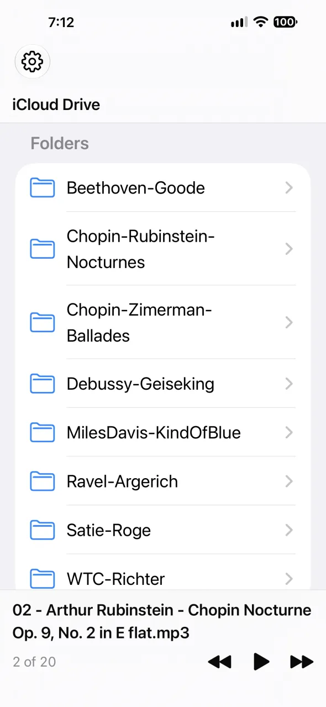
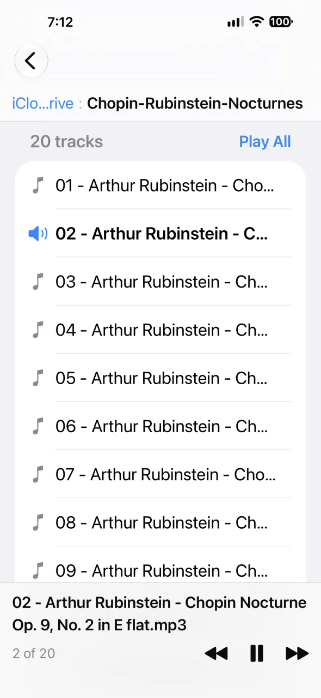

A proof-of-concept iPhone app that does one simple thing: play a folder of music, start to finish.
Over the years you have accumulated FLAC, Ogg, and MP3 files, organized into folders on iCloud Drive. All you want is to play everything in a folder, non-stop, in order. Attacca does exactly that: tracks play sequentially in filename order, with gapless transitions between them (a true attacca).
Pick a folder from your iCloud Drive. The now-playing bar stays at the bottom of every screen:

Then pick a track or tap Play All:

That's it.
Source code and builds: github.com/JagSingh/Attacca. Not on the App Store; install the IPA manually.